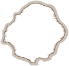
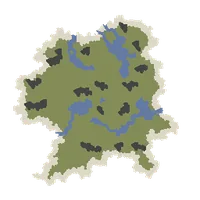
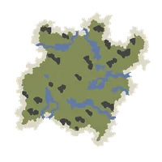
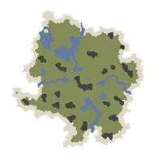
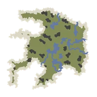
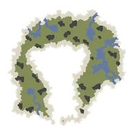

Home › World & Travel
Islands & Travel Live
Island types (Ancora, Safe House, Tamed Island, Unstable Islands, Civilized Islands) · sailing, balloons, returning to a Stable Island · island levels, Unstable Index and danger
Some sections on this page are not ready yet
The world of Durango is an archipelago. Every island has its own level and climate. Some islands are safe and permanent (you can settle there), others are Unstable Islands — more dangerous, but with better loot. Everyone on the server shares the same world: you meet, help and compete with other players on the same islands.

What you can do
- Start on Ancora → build a raft → arrive at The Company's Safe House
- Take the Hot Air Balloon to claim your own Tamed Island, then declare a Domain
- Sail from a Harbor to Unstable Islands in 8 climates, level 15–60, to gather and hunt
- Pick your own difficulty with each island's Unstable Index (1–10)
- Go home for free at any time with Sail to the last Stable Island or the warp buttons on Warps & Rifts
Island types
| Type | Island level | Domain | Unstable Index | Island fatigue |
|---|---|---|---|---|
| Ancora (starting island) | 1 | No | 1 (stable) | None |
| The Company's Safe House | 5 | No | 1 (stable) | None |
| Tamed Island | 10 | Yes (free expansion) | 1 (stable) | None |
| Unstable Island | 15–60 | No | 1–10 | Yes |
| Training island (tropical) | 18 | No | 1 (stable) | Half |
| Civilized Island (abandoned city) | 40 | Yes | 1 (stable) | Half |
| Event islands | 20–60 | No | 1 | Yes |
Ancora (starting island) Live
Every new character starts on Ancora — the tutorial island, rebuilt from the original game's real map. Follow the tutorial, finish the raft (4 logs · 6 reed stems) and it carries you to the Safe House.
- Resources were rebuilt to match the original: everything is on ground you can walk to — nothing on cliffs or unreachable plateaus · the tutorial spots have what the tutorial asks for (dates at the train cars · reeds at the stream · stones by the lake · branches and stones at the bonfire · log trees and reeds around the small lake by the raft) — details in Getting Started
- Resource amounts and regrow speed are the same as on other islands (no special multiplier anymore)
- Resting at the bonfire on Ancora empties your fatigue in 5 seconds
- Animals: the Brachiosaurus stay in the lake only · 2 small Compsognathus at the train cars (scenery)
- You can sail back to visit Ancora from a Harbor, but you can only leave by raft — you must build it again every time
The Company's Safe House Live
The hub for new players — K and the Company's staff, a workbench, a campfire, a notice board, a Harbor, a balloon station and Warp Holes you can use right away without finding them. If you haven't set a Waypoint anywhere, the Safe House is your "home".
Tamed Island Live
A level 10 grassland island for settling down — declare a Domain, build a house, farm, raise animals. Expanding a Domain on a Tamed Island is free. No bosses, and no climate fatigue from the island itself.
Tamed Islands are a shared world — everyone who picks the same island layout lives on the same island. You see each other and can visit each other's homes, like a village where everyone stakes out their own plot. Spots already declared show as owned, so look for the next free one.
Your first trip to your Tamed Island is by Hot Air Balloon from the Safe House (see Hot Air Balloon below). You can pick from 5 island layouts (next section).
Choosing your Tamed Island layout Live
The first time you press Leave at the balloon station, the Declare Tamed Island screen lets you pick from 5 grassland island layouts, each with a different map.
    
- You choose once — the layout can't be changed afterwards
- Players who already have a Tamed Island keep it and are not moved
- Each layout is its own shared world — players who pick the same layout live together
- Same rules for all: level 10 · Index 1 · no bosses · animals to tame · free Domain expansion
Unstable Islands Live
Islands you reach by sailing — high-level resources and aggressive animals. Most islands of level 35 and above have Rifts and craters. The higher the level or Index, the more dangerous. You cannot declare Domains here.
| Climate | Level | Islands | Name shown in game | Unstable Index |
|---|---|---|---|---|
| Savanna | 15 | 1 | (no name yet) | rotates every 7 days |
| Snowfield | 20 | 1 | ทุ่งหิมะน้อย (Little Snowfield) | rotates every 7 days |
| Tropical | 25 | 1 | (no name yet) | rotates every 7 days |
| Tundra | 30 | 1 | (no name yet) | rotates every 7 days |
| Desert | 35 | 4 | ทะเลทราย 1–4 (Desert 1–4) | 1 · 4 · 7 · 10 |
| Temperate | 35 | 4 | ป่าอบอุ่น 1–4 (Temperate Forest 1–4) | 1 · 4 · 7 · 10 |
| Tropical | 40 | 4 | ป่าเขตร้อน 1–4 (Tropical Forest 1–4) | 1 · 4 · 7 · 10 |
| Savanna | 45 | 4 | สะวันนา 1–4 (Savanna 1–4) | 1 · 4 · 7 · 10 |
| Snowfield | 50 | 4 | ทุ่งหิมะ 1–4 (Snowfield 1–4) | 1 · 4 · 7 · 10 |
| Tundra | 55 | 4 | ทุนดรา 1–4 (Tundra 1–4) | 1 · 4 · 7 · 10 |
| Swamp | 60 | 4 | บึงลึก 1–4 (Deep Swamp 1–4) | 1 · 4 · 7 · 10 |
| Volcano | 60 | 4 | ภูเขาไฟ 1–4 (Volcano 1–4) | 1 · 4 · 7 · 10 |
For areas with 4 islands, the number in the name tells you the Index: island 1 = 1 · island 2 = 4 · island 3 = 7 · island 4 = 10 (fixed, never rotates). Island names are shown in Thai on this server, even in the English client.
Training island (tropical) Live
A level 18 tropical island with the survival tutorial (find a crater, find the harbor). You can sail there from any Harbor. Its Index is always 1, it has no predators, and island fatigue is halved.
Civilized Islands Live
Four abandoned cities at level 40 (grassland · temperate · tropical · tundra) — stable islands where you can declare a Domain. Island fatigue is halved.
Event islands Live
Islands from the original game's past events (grassland festival · Summer Club · Season 1/2 islands) are open as normal islands with Index 1. If you log out while on an event island, you'll wake up at home next time (see "Logging out on a temporary island" below).
Travelling between islands
Sailing from a Harbor Live
- Walk to a Harbor and tap it → choose Sail
- The sea map opens — pick a climate/level, then an island by the Index you want
- Confirm "Do you want to move to the … island?" → you land at that island's arrival point
- Sailing is free — no T-Stones — and islands are not level-locked. You can go to a level 60 island at level 1, but you'll tire very fast
- Islands with Index 3 or higher need enough climate resistance (table below), or you can't set sail
- Your pets and everything in your bag come with you
Returning to a Stable Island Live
At the Harbor of an Unstable Island you get Sail to the last Stable Island and "Return to the Tamed Island harbor you started from?" — both take you straight to your home island, for free.
- Home island = the island where you used Designate as Waypoint (your own bed/tent) · never set = the Safe House
- Leaving any island clears that island's automatic checkpoint (a bed/tent Waypoint is kept)
Hot Air Balloon Live
The balloon station at the Safe House offers two things:
- Leave — go to your Tamed Island (the first time, the Declare Tamed Island screen opens first so you can pick 1 of 5 layouts)
- Board Hot Air Balloon — fly freely over the island, even across water. Free to board · flights last up to 15 minutes, then you land automatically · you can't land on water/cliffs — you'll be sent back to the station
Island level & danger
Unstable Index Live
The higher the Index, the tougher the animals and the faster you tire — but mission exp and the latent properties on what you gather get better too.
| Index | Resistance needed | Animal HP / attack |
|---|---|---|
| 1 | — | ×1.00 |
| 2 | — | ×1.25 |
| 3 | 3 | ×1.50 |
| 4 | 7 | ×1.75 |
| 5 | 12 | ×2.00 |
| 6 | 17 | ×2.25 |
| 7 | 25 | ×2.50 |
| 8 | 35 | ×2.75 |
| 9 | 62 | ×3.00 |
| 10 | 80 | ×3.25 |
- The resistance must match the island's climate (Temperate/Grassland islands accept your highest resistance of any type) — see Weather
- Single islands at level 15/20/25/30 move up one Index every 7 days (1 → 10, then back to 1); the change happens Thursday 00:00 UTC (07:00 Thai time)
- Index 2+ adds fatigue: Index 2 = +1.0/min · 8 = +4.0/min · 10 = +5.0/min
Island fatigue Live
On an island above your level, your fatigue rises quickly — that's what keeps beginners away from level 60 islands (there is no level lock).
| Character level | Island level | Fatigue/min (weather not included) |
|---|---|---|
| 1 | 18 | 4.55 |
| 20 | 35 | 6.30 |
| 35 | 35 | 4.50 |
| 40 | 60 | 9.60 |
| 60 | 60 | 6.00 |
| 60 | 35 | 3.00 |
Heat, cold and storms add more — see Weather and Survival.
Animals & safe zones Live
- Normal animals spawn at island level ±5 — see Animals
- A 12-tile radius around every Harbor and arrival point is a safe zone: animals don't spawn there, and predators chasing you give up when you run into it
Logging out on a temporary island Live
If you log out or disconnect while on a temporary island — an Unstable Island with Index 2+, an event island, or the training island — the next time you log in you'll be on your home island (or the Safe House) with the message "The island disappeared and you were moved to your Waypoint." Everything you carry and your pets come with you.
- Stable islands (Safe House · Ancora · Tamed Island · Civilized Islands · Unstable Islands with Index 1) → you come back where you were
- Arriving on a temporary island by boat doesn't move you — it only happens on the next login after you log out
- A single island whose Index rotates to 2+ while you're offline counts as temporary too
Permanent crater caches Live
On Unstable Islands with Index 2 or higher, every crater becomes a resource cache — 10 natural resources of one kind around the crater (5-tile radius), guarded by 3 animals that are ×1.5 tougher than normal (on top of the island's Index). The cache type depends on the island's climate, e.g. iron mine, rubber trees, fir forest.
Key numbers
| What | Value |
|---|---|
| Sailing / returning to a Stable Island | Free |
| Raft to leave Ancora | 4 logs · 6 reed stems |
| Longest balloon flight | 15 minutes |
| Safe zone around Harbors/arrival points | 12 tiles |
| Animal level | Island level ±5 |
| Unstable Index | 1–10 (4-island areas = 1 · 4 · 7 · 10) |
| Single-island Index rotation | 7 days |
| Animals at Index 10 | ×3.25 |
Tips
Not finished yet Not ready
- Single islands at level 15 / 25 / 30 have no name in the sailing confirm box yet (they show an island code)
Random Sailing Not ready
The original game has a Random Sailing option at the Harbor that takes you to another player's Tamed Island — not on this server yet (Tamed Islands are already a shared world; you meet friends by living on the same layout).